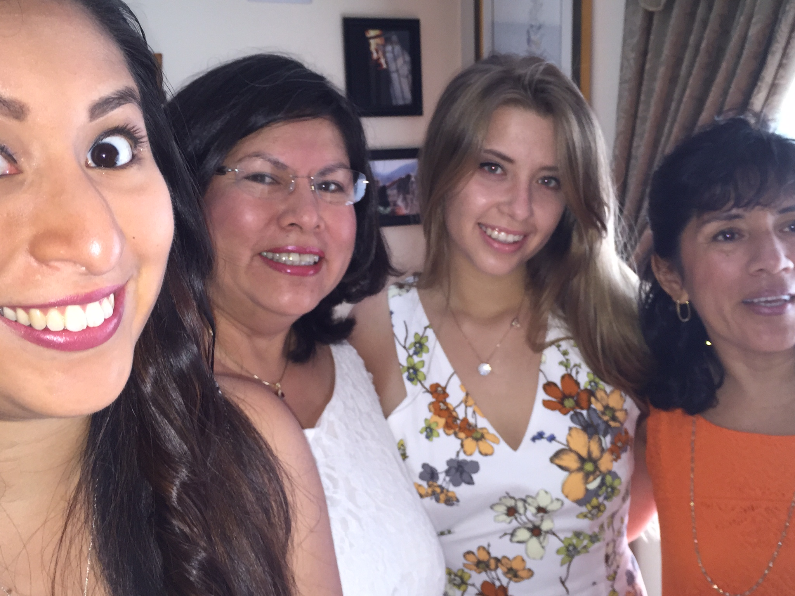

Memories are probably one of the things in life I am most grateful for. Without our memories, everything we experience would disapear right after it happened, and everything we learned would become useless if we were not able to remember them. Along with loving photography because of the art you can create with it, I have found I have an appriciation for the memories you are able to capture with photography.
This will be a journey through the past three years of my life, where I have felt like I have truly learned the most about life.
This was my senior year of high school. This year was the year I met the people who would shape who I am today... as cheesy as that might sound. Their names are
To be completely honest, this year of my life felt like an NYU Student's coming of age film. Everything important happened to me this year... but at the same time,if you asked the people looking in, nothing important happened at all.
We were learning how to drive (Although, I still lack the ability), we were chosing who we wanted to be (Although, we still do not know), and we were able to stay out until 2 am for the first time (I do not have an although for this one.)
We explored the, haunted places on Long Island that we have only just heard of and read about. Such as Sweet Hallow Road and Mount Misery We spent our nights riding Ocean Parkway and found ourselves on the cooled down sand at 1am laughing and staring at the stars.
To end this page, here is a photograph with me and my Family on my graduation day.
 Page 2